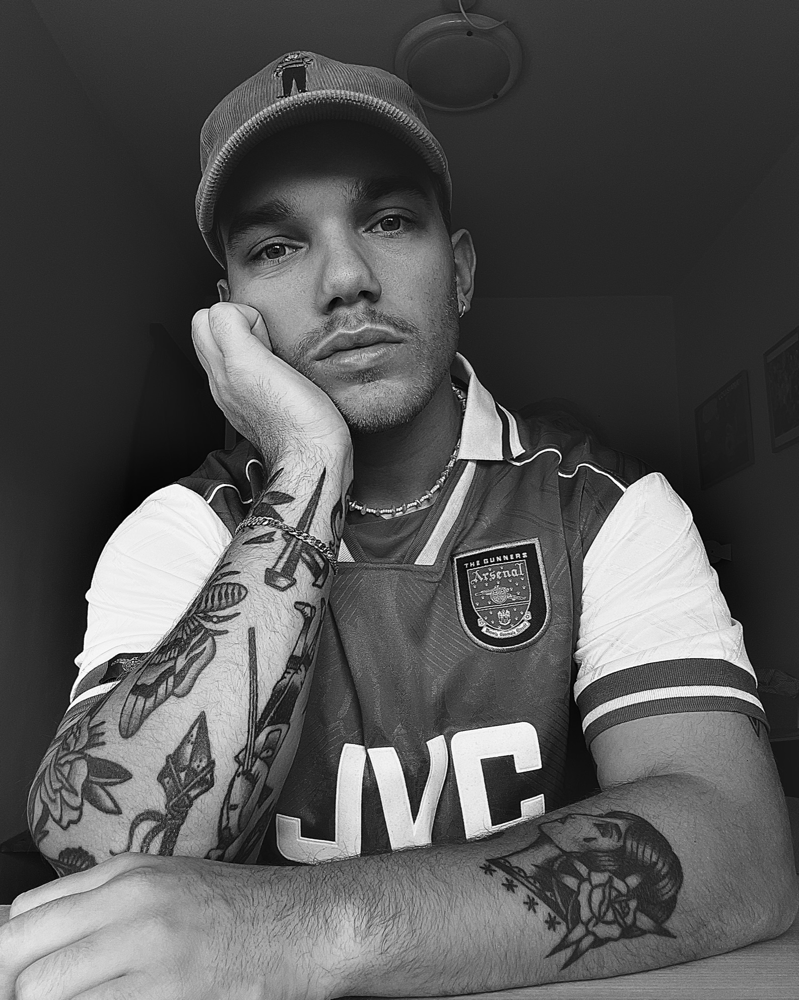
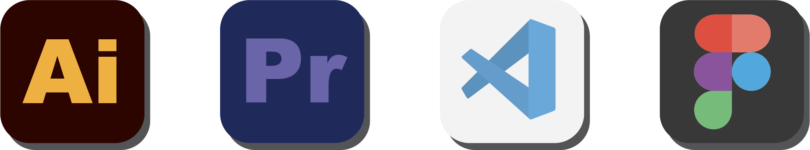

SOFTWARE
Jeg er en kreativ sjæl med kompetencer inden for digital produktion og design.
Min primære værktøjskasse inkluderer Premiere Pro til videoredigering, Illustrator til grafisk
design,
Figma til
prototyper og VS Code til kodning.
Gennem min erfaring med disse apps har jeg udviklet en alsidig og teknisk kompetence, der gør mig i
stand til at
håndtere forskellige aspekter af kreativ produktion, fra visuel æstetik til kodning.

UDDANNET SALGSASSISTENT
Jeg har stået i tøjbutik i lidt over 6 år i fire forskellige virksomheder.
• Kauffmann
• qUINT
• Mr. Møllbach
• Butik Frederik
TOP 3 TING
⟝⦁⦿⦁⟞
HOBBYER

BADMINTON
Jeg er stortset lige begyndt at spille badminton igen efter 16 års pause.. Det sgu ret sjovt.
⦁⦿⦁

MADLAVNING
Det har altid intereseret mig at lave mad. Især det med at lave mad til andre.
⦁⦿⦁